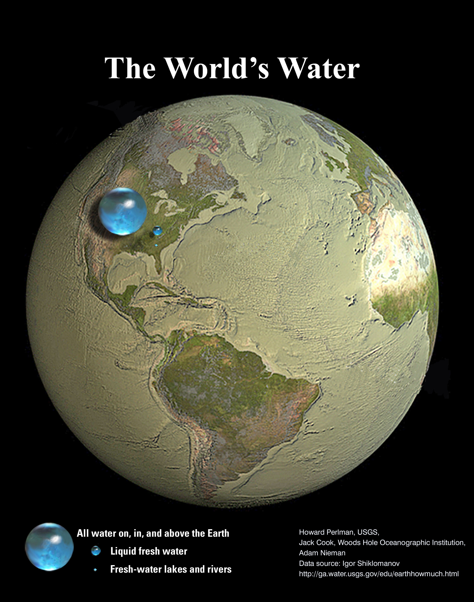

Representing numbers
Contents
1. Representing numbers#
This chapter provides some short background practice on working with numbers. After working through the chapter you should
Be able to express numbers in scientific number format and recognise why this format can be useful.
Understand the expression “order of magnitude” and be able to provide a justified order of magnitude estimate.
Recognise the importance of including units in calculations, and be able to balance the units on each side of an equation.
The exercises in Section 1.6 and Section 1.7 are provided for you to practice.
We are entering a new era of so-called precision cosmology.
In short, Katie Melua has no right to call the age of the universe “a guess”.
1.1. Precision#
When we state the numeric value of a measured quantity such as the volume of water in a beaker or the number of bacteria in a sample we often give additional information about the width of the measurement interval such as “to the nearest millilitre” or “to the nearest million bacteria”. These can be understood as statements about measurement precision.
In everyday language the terms accuracy and precision are often used interchangeably, but in science and mathematics they have distinct meanings, and it is possible for a measurement to be very precise without being accurate. Precision relates to the increment of measurement used, whilst accuracy quantifies how close the measured result is to the true value it seeks to determine.
We can accurately describe the precision of a measurement by using significant figures, which are based on powers of 10, as shown in Table 1.1. A standard way of doing this is described in the next subsection.
Power |
Decimal |
Prefix |
Symbol |
|---|---|---|---|
\(10^9\) |
1,000,000,000 |
giga |
G |
\(10^6\) |
1,000,000 |
mega |
M |
\(10^3\) |
1,000 |
kilo |
k |
\(10^{-3}\) |
0.001 |
milli |
m |
\(10^{-6}\) |
0.000 001 |
micro |
\(\mu\) |
\(10^{-9}\) |
0.000 000 001 |
nano |
n |
1.2. Scientific notation#
To express a number in scientific notation we use a product of the significant digits and a power of ten. The technique is best illustrated using examples:
\(\begin{alignat*}{5} &\bullet\ 0.13 &&= 1.3\times 10^{-1} &\qquad \text{(2 sig figs)}\\ &\bullet\ 0.000101 &&= 1.01\times 10^{-4} &\qquad \text{(3 sig figs)}\\ &\bullet\ 34012 &&= 3.4012\times 10^{4} &\qquad \text{(5 sig figs)} &\end{alignat*}\)
The decimal part of the number contains the significant figures. It should start with the most significant digit (i.e the first non-zero digit), followed by a decimal point. The least significant (final) digits can be zeros. For example, we may distinguish between:
\(\begin{alignat*}{5} &\bullet\ 1.5\times 10^{2} &&= 150 &\qquad \text{(2 sig figs)}\\ &\bullet\ 1.50\times 10^{2} &&= 150 &\qquad \text{(3 sig figs)} &\end{alignat*}\)
The former representation indicates that the value is precise in its second digit, whilst the latter indicates that the number is precise in its third digit.
Exercise 1.1
Express the following numbers using scientific notation, to 3 significant figures:
100.7
10.345
0.03296
\(1.01\times 10^{2}\)
\(1.03\times 10^{1}\)
\(3.30\times 10^{-2}\)
The first and second expressions look unusual and we would usually write 101, 10.3.
1.3. Uncertainty#
Measurements often include a statement about their uncertainty, which provides a bracket on the “true” measurement value. For instance, we might say that a given mass is 5.09g \(\pm\) 0.02g, which means that the true measurement lies between 5.07g and 5.11g.
If an explicit uncertainty is not given then it is usually implied by the last significant digit. For example, 3.0g lies between 2.95g and 3.05g.
Intervals
When we say that a number \(x\) lies “between” two values, we should be careful to state whether the end-points of the interval are included, either by using strict/non-strict inequality symbols or by using interval notation.
In interval notation we write the end-points as a number pair enclosed in brackets. A square bracket indicates that the endpoint is included, and a round bracket indicates that it is not. For example, see the exercise below.
Exercise 1.2
The statement “\(x\) lies between 2.95 and 3.05” can mean any of the following
Interval notation |
Using inequalities |
|---|---|
\(x\) in \([2.95,3.05)\) |
\(2.95\leq x <3.05\) |
\(x\) in \((2.95,3.05]\) |
\(2.95< x \leq 3.05\) |
\(x\) in \([2.95,3.05]\) |
\(2.95\leq x \leq 3.05\) |
\(x\) in \((2.95,3.05)\) |
\(2.95<x<3.05\) |
Which of these is the correct implied interval for the number 3.0?
The correct answer is [2.95,3.05)
1.4. Order of magnitude#
When describing the smallness or bigness of numbers it can be helpful to classify them into powers of a given reference quantity (called the base). Customarily we use base 10, though base 2 is used to describe computer memory, and in advanced mathematics it is common to use a base defined by a property of the system being investigated. We may denote the order of magnitude using the symbol \(\mathcal{O}\).
In base 10, the order of magnitude is given by the power in scientific notation. For example, the value \(3.124\times 10^3\) is \(\mathcal{O}(10^3)\).
An order of magnitude estimate keeps only the most significant digit in scientific number format. For instance, an order of magnitude estimate for the number of humans on Earth is \(8\times 10^{9}\). More precise values can be used in the steps towards working out an order of magnitude estimate.
Two physical quantities are said to be the same order of magnitude if their ratio lies between 1/10 and 10. For instance, the value \(6.4\times 10^{4}\) and \(1.2\times 10^{5}\) are the same order of magnitude.
Exercise 1.3
By one estimate there are around \(2\times 10^{16}\) ants on Earth, with an average biomass of 0.62mg.
The world population of humans is around \(8 \times 10^9\), with an average mass of 50kg including children, of which around 15% is biomass.
Calculate the total ant biomass and the total human biomass. Are these the same order of magnitude?
Expressing the total mass in kg, using the result \(1\text{mg}=10^{-6}\text{kg}\):
Ant biomass : \(1.24\times 10^{10}\)kg
Human biomass: \(6\times 10^{10}\)kg
The ant biomass and human biomass are the same order of magnitude, with a ratio around 21%.
Exercise 1.4
Find an order of magnitude estimate for the number of disposable coffee cups used by Natural Sciences students on campus during Term 1. It is up to you how you come up with the numbers!
1.5. Working with units#
In scientific work you will often have to deal with measured quantities, which use a reference scale such as kilograms, metres or seconds. Even when counting a pure number (e.g number of atoms) the result is usually given with reference to a unit such as “per gram of matter”. You should always included the units when writing your answers, so that they are meaningful, and you should consider whether the units shown in your final answer are appropriate. For example, is 1mg a better way of writing 0.001kg?
Whenever you undertake calculations involving units, you should try to carry the units throughout each step of your work. The units on each side of an equation must balance!
Exercise 1.5
The neutron star PSR J0740+6620 has an estimated mass of 2.08 solar masses and an estimated radius of 13.7km.
Use these figures to obtain a result for the density of PSR J0740+6620 in standard international (SI) units, and also determine how much mass is contained with a volume of one metric teaspoon.
You may take the solar mass \(M_{\odot}\) to be \(1.98847\times 10^{30}\text{kg}\).
Taking the star to be a sphere with radius \(r=13.7\)km gives the volume to be
The density is therefore
The volume of a metric teaspoon is 5ml, which is equivalent to 5 cubic cm, or \(v=5\times10^{-15}\text{ km}^3\).
Thus, the estimated mass of a teaspoon of this material would be
That is to say that a teaspoon of this neutron would have a mass of approximately two trillion kg, or two billion metric tonnes. To help put this in perspective, the mass of a Mini Cooper electric vehicle is around 1.5 tonnes.
1.6. Earth’s water#
Most of the water that we drink comes from groundwater, lakes, rivers and reservoirs. These potential water sources make up only a small fraction of the total water on Earth, as shown by the data in Table 1.2, which are obtained from the US Geological Survey.
Type of water | Volume (cubic km) | Total water % | Fresh water % |
|---|---|---|---|
| Oceans, seas and bays | 1,338,000,000 | 96.538 | — |
| Other salt water | 12,955,400 | 0.935 | — |
| Ice, snow and frost | 24,364,000 | 1.758 | 69.614 |
| Fresh groundwater | 10,530,000 | 0.760 | 30.087 |
| Freshwater lakes | 91,000 | 0.007 | 0.260 |
| Other fresh surface water | 13,590 | 0.001 | 0.039 |
Exercise 1.6
The figures in Table 1.2 are quoted in cubic km. Given that a litre is equal to a thousand cubic cm, determine how many litres there are in one cubic km.
The question requires us to convert cubic km to cubic cm.
\(1\text{km}^3=(1000\text{m})^3=(10^3 \times 100\text{cm})^3=(10^5\text{cm})^3=10^{15}\text{cm}^3\)
Since one litre is equal to 1000 cubic cm, the result is \(1\text{km}^3=10^{12}\text{l}\).
A cubic kilometre is equal to a trillion litres. When expressed in terms of litres the volumes of water given in the table seem mind-bogglingly huge. Freshwater lakes, rivers and swamps together account for less than 0.3% of Earth’s total water, yet contain almost a hundred quadrillion litres (\(10^{15}\text{l}\)).
Note: One cubic km is also equal to 1 Gm3 or 1000Mm3, where m3 is used as an accepted abbreviation for \(\text{m}^3\).
Exercise 1.7
Imagine all of the Earth’s water rolled up into a single sphere. What would be the radius of this sphere, in kilometres?
To answer this question we need to use the formula for the volume \(V\) of a sphere in terms of its radius \(r\), given by
The total volume is found by adding up the values in Table 1.2 to obtain \(V=1.386\times 10^9\text{km}^3\). The radius can therefore be calculated as
All of the Earth’s water would fit into a “droplet” with radius less than 700km radius. A similar calculation can also be used to demonstrate that the volume of water contained in freshwater lakes, reservoirs and swamps would fit in a droplet with radius less than 30km! A striking visulization of these results is shown in the image below, which is obtained from USGS images.
{kind=link}
Exercise 1.8
Table 1.2 shows that less than 0.008% of the Earth’s water is contained in freshwater lakes, rivers and swamps. Express this ratio in metric teaspoons (tsp) per 100 litres. (Note: 1tsp = 5ml)
Let \(f\) denote the freshwater in lakes, rivers and swamps, and \(W\) denote the total water, so
Taking \(W=100\text{l} = 100\times1000\text{ml}\), we obtain
For every 100L of water on Earth, less than two teaspoons is found in freshwater rivers, lakes and swamps.
1.7. Amount of substance#
When measuring the amount of a substance, we can refer to the mass or the volume or the number of “elementary entities” such as atoms or molecules. Conversions between these units often make use a convenient unit of measurement called the mole.
1.7.1. The mole#
Traditionally, a mole was defined to be the number of atoms in 12g of Carbon-12. Now the inernationally accepted value of this measure is defined to be a specific numnber called Avagadro’s constant, which is
Carbon-12 (\(\ce{^{12}_{}C}\)) was chosen as the reference element by international standard because of its relatively simple structure, abundance, and stability - which make its mass comparatively easy to measure.
A reference mass of 12g was used because it matches the element mass number of \(\ce{^{12}_{}C}\) -i.e. the number of protons and neutrons per atom. This makes the resulting calculations slightly more intuitive, as outlined below.
1.7.2. Relative atomic mass#
We call the grams-per-mole measure of an atom the relative atomic mass. The definition of a mole ensures that the element mass number and the relative atomic mass (in g/mol) are roughly the same. Indeed, for Carbon-12 this equivalence is exact, by definition.
However, whilst the bulk mass of an atom is determined by the number of protons and neutrons that it contains, the electrons also contribute a small amount to the mass. The atomic mass also needs to take account of the “mass defect” due to binding energy of the atom. This means that for all elements apart from \(\ce{^{12}_{}C}\) the relative atomic mass is not precisely equal to the element mass number.
For example, the relative atomic mass of Carbon-13 (\(\ce{^{13}_{}C}\)) is 13.003355 g/mol.
Exercise 1.9
As we have seen with carbon, different isotopes of the same element have different atomic masses. The relative atomic mass is determined by the average of the isotope masses, weighted by their abundance in nature.
Whilst there are four different isotopes of carbon, two of them have very short half-life and are therefore found only in miniscule quantities. Their contributions to the average atomic mass of carbon can be neglected to a very good approximation.
Given that the relative atomic mass of carbon is 12.0106 g/mol, and that the atomic mass of \(\ce{^{13}_{}C}\) is 13.003355 g/mol, determine the abundances of the two most common carbon isotopes.
Let \(c_{12}\) and \(c_{13}\) denote the abundances of Carbon-12 and Carbon-13, respectively. Then, we may write
Since these two isotopes are taken to account for 100% of the total abundance of carbon, we may also use the result \(c_{12}+c_{13}=1\).
Solving the two equations together gives \(c_{12}=0.9894\), \(c_{13}=0.0106\).
Thus, Carbon-12 accounts for approximately 98.94% of carbon abundance and Carbon-13 accounts for approximately 1.06%.
The relative atomic masses of the periodic table elements can be found in the CRC Handbook of Chemistry and Physics online, Table 1. Where a range of values is indicated in square brackets in the manner [a,b], you can take the midpoint of the interval, which is given by (a+b)/2.
1.7.3. Molar mass#
The molar mass of a given molecule (in g/mol) can be straightforwardly determined by combining the relative atomic masses of its constituent atoms.
Exercise 1.10
Use CRC Handbook, Table 1 to calculate the molar mass of glucose \(\ce{C6H12O6}\). This molecule contains six atoms of carbon, twelve of hydrogen, and six of oxygen.
First we need to obtain the relative atomic masses of carbon, hydrogen and oxygen. From the table, we obtain the following values:
Carbon = 12.0106 g/mol
Hydrogen = 1.0080 g/mol
Oxygen = 15.9994 g/mol
Glucose: \((6\times 12.0106)+(12\times 1.0080)+(6\times 15.9994)=180.156\) g/mol
So 180.16g of glucose contains one mole.